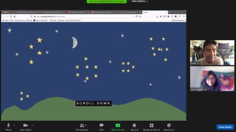
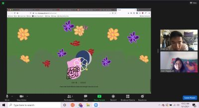
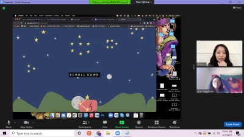
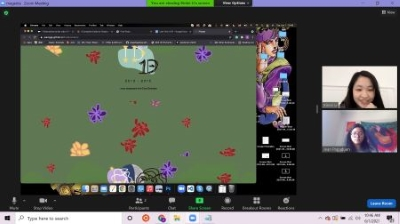
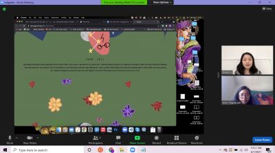
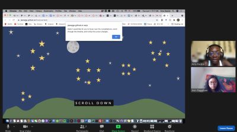

Testing Final Project with Peter, Xinlei, and Ama
Tue. June 1, 2021
Peter was first to test my final project so far. He gave many great reactions while testing my page. Upon entering it, he immediately hovered and played with interactions on the constellations.  When we discussed, he gave me some great ideas. He said that maybe doing a fade animation for the constellations would look interesting so that it is less abrupt. If I wanted to add more things to my javascript, he suggested revealing my timeline information through clicking something. He also said maybe talking about how one phase led to another would help bring it all together. However, my biggest takeway from feedback with him is his suggestion of having the flowers bloom the more you scroll. I think is definitely interesting, and a great way to drive home the theme of flowers blooming. 
Next, Xinlei tested my page. She said that she naturally felt like she should click on the constellations instead of just hover. I agree with her.  She brought up that the words could be a little bigger or fixed to be more readable. She also said that lighter greens might look better. I agree with this as the more I have looked at my page, the less I like the color palette used. She also said the flowers and their animations may be repetitive and this is something I agree with. Like Peter said, I think having the bloom or doing something different with them will be interesting.  My biggest takeaways from Xinlei are that I should have quotes or keywords next to the animated flowers so that they could be a more involved element in the page. She also mentioned an about page at the end so that the user can know more about the theme and overall message I am trying to portray, which is a great idea. 
Ama was the last to test my page.  She said she liked the colors a lot, but the dark green may make the words hard to read. The constellaitons were her favorite part. She iterated that they seemed clickable. An interaction she suggested was having them click and then scroll to the secion about them. She suggested doing something with the moon phases animation, possibly more interaction. My biggest takeaway from her was the idea of adding drawings of the butteflies in the parallax background along with the flowers. I wanted butterflies to be one of the biggest elements on this page along with flowers and the moon, so this is a great idea.
Final Project Update Plan
Due to all their feedback, I definitely want to attempt to implement a lot of what they said. I will focus on making the page more readable by changing type and font. I will also add more imagery by adding more flowers and butterflies and changing their interactions. I will make the flowers bloom as you scroll and add more interaction so that the butterfly cursor can fly when it encounters something intractive. I also really like the idea of having an About section or including quotes regarding my page's themes in-between the paragraphs about my phases.